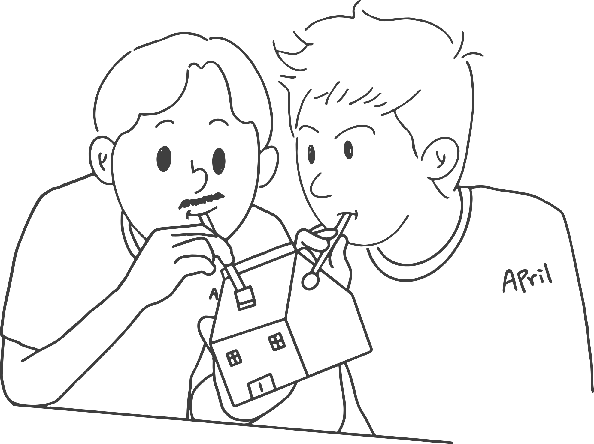

G-ARCH PROJECT

두 분은 회사에서 만나셨나요? 어떻게 알게된 사이에요?
ㅎㅅㅎ 아니에요, 전혀.
처키 대학교 동기인데 학교 다닐 때는 서로 알지 못했어요.
ㅎㅅㅎ 졸업하기 직전에 친해졌어 진짜.
그럼 같이 졸업한거에요?
처키 내가 한 학년 휴학을 해서, 1년 늦게 졸업했죠.
그리고 대학원도 가셨죠. 그럼 회사는 더 늦게 들어갔겠네요.
처키 맞아요. 대학원도 갔습니다. 그런데 이 회사가 제가 원래 알바를 하던 회사였거든요, 그래서 알바자리를 대체할 사람을 찾다가 ㅎㅅㅎ을 꽂아주고 갔어요. 근데 뭔가 그래도 믿음직한 구석이 있긴했는데 잘은 몰랐거든요. 설계를 같이 해본적은 없어서.
무슨 느낌인지 알 거 같아요. 저도 ㅎㅅㅎ님이 설계를 어떻게 하는 지는 모르지만, 지아키에서 굉장히 건축을 좋아하는 사람 중 한 명으로 알고 있으니까요.
처키 맞아. 그런 이미지가 있잖아요. 그래서 감각은 어느 정도 있겠다 싶었죠. 그래서 꽂아주고 갔는데, 그 이후에 비슷한 시기에 오퍼가 같이 들어왔어요. 그래서 시기에 차이는 있지만 같은 회사에 다니게 된거죠.
그럼 두분은 언제 서로가 이쪽인걸 알게된거에요?
처키 졸업하고 내가 인스타 dm으로 물어봤어. 아 맞아, 히즈에서. 히즈 소곤소곤에서 ㅎㅅㅎ이 글을 하나 올린거야.
ㅎㅅㅎ 내가 그때 당시에 이제 같은 동종 이쪽 친구를 찾고 싶어했거든. 학교에서 설계에 관심 있는 사람이 크게 없었기도 하고. 아무튼 지금의 지아키 같은 게 있었으면 들어오고 싶었어요.
처키 갈증이 있었어 이런 모임에 대한, 그래서 히즈에다가 글을 올린 걸 내가 본거지.
ㅎㅅㅎ 학교를 드러내진 않았고, 책상 사진 찍어서 나 작업 중 뭐 이런 식으로 올렸지.
처키 자기 콘타 사진도 한번 올렸고.
콘타까지요? 자신을 되게 드러냈었네요. 나 여기 있으니까 빨리 찾아줘. 이런 느낌으로.
처키 그래서 내가 댓글에다가 이름 초성을 댓글을 달았는데, 게시글이 갑자기 없어졌어요.
ㅎㅅㅎ 내가 너무 놀라서. 나도 건축과야, 이런식으로 댓글이 달릴 줄 알았는데, 갑자기 내 신상을 말하니까, 나는 너무 놀라서 지웠지.
보통은 자기를 드러내지 않고 사람들을 찾고, 그 다음에 서서히 자신을 밝히는 그런 과정을 취한다고 생각 해요. 그런데, ‘나 빨리 찾아와 나 이렇게 공개했으니까’ 이거 굉장히 도발적이네요. 그럼 이 일 후에 DM을 보낸거겠네요.
ㅎㅅㅎ 히즈에 글을 올린건 3학년 때 쯤이고 처키한테 DM을 받은건 졸업 후였어. 근데 그때 처키가 자기 친구한테 물어본 적이 있었나 봐. XX학번에 이쪽이 있냐고. 근데 나도 우리 학번에 이쪽이 있다는 얘기를 다른 친구한테 또 건너 들었어.
둘이서 각자 꽁냥꽁냥 많이 했네요. 뭔가 청춘 드라마 보는 것 같기도 하네요.
ㅎㅅㅎ 근데 아무리 생각해도 우리 과에 추정되는 애가 잘 없는 거야
그렇죠, 처키님은 좀 일틱한 편이긴 하죠.
처키 하지만 난 건축과에 한 명이 있다고 해서 ㅎㅅㅎ을 추정할 수 있었지.
그렇군요. 그럼 지아키에도 같이 들어왔나요?
처키 그때 나는 애인이 먼저 지아키에 있었어. 그랬는데 또 ㅎㅅㅎ이 지아키에 들어와 있었던거야. 나한테 얘기 안 하고. 그런데 사실 그때는 내가 연애하면서 약간 소원해진 것도 있긴 해요. 아, 그때 애인도 ㅎㅅㅎ이 소개시켜준거였죠.
둘 사이가 정말 정말 복잡하네요.
ㅎㅅㅎ 나는 들어왔는데 고등학교 친구도 있었고.
ㅎㅅㅎ님이 아는 사람이 많았네요.
ㅎㅅㅎ 나 인싸야.
근데 잘 안 나와서 그렇지.
ㅎㅅㅎ 나 정도면 되게 열심히 해
열심히라는 말은 이런데 쓰는게 아니야.
학교 같은 과 동기중에 이쪽 친구가 있다는 점이 정말 좋을 거 같아요. 그래서 이달의지아키라도 우리 게이 학생들이 많이 봤음 좋겠어요.
처키 아니 애들이 되게 의지할 데가 없어.
ㅎㅅㅎ 맞아 내가 그랬잖아.
처키 건축이 되게 이성애자 중심이 있잖아요.
되게 심하죠.
처키 그래서 우리 같은 사람들은 학생때 공부하면서 되게 어울리기 힘들때도 있고, 외로울 때가 있는데, 지아키 라는 모임이 있다는걸 알고 또 일반 선후배처럼 편하게 소통할수 있는 창구가 있다면 훨씬 더 의지가 될 것 같아.
ㅎㅅㅎ 그런 것도 있고 나는 학생 때 이쪽 친구도 없고 건축을 진지하게 하는 사람도 주변에 없어서 아까 말했던 것처럼 둘에 해당하는 사람들을 찾고싶었어. 그래서 처키랑 친해지고 싶은 마음이 있었던 것 같아요.
처키 알게 된 후에 답사도 많이 다니고
ㅎㅅㅎ 내가 막 가자
처키 전시도 많이 보러다니고.
그러고보니 지아키내에서 둘을 포함해서 구일모임이 있어요. 어떻게 만들어진거에요?
처키 시작된 계기는 그냥 우리가 내향인이기도 한데, 마침 같은 나이인 친구들이 있어서 같은 나이니까 더 친해져보자 했던 거에요.
아무래도 좀 더 동지감이 있고 할 테니까요.
처키 그때는 동네도 비슷했어. YW가 가까운데 살았지. 그래서 우리가 YW한테 같이 한번 놀자 이렇게 한 거고, 그러다가 코알라한테도 한번 놀자 해서 만났는데, 뭔가 전시도 자주 다니고, 여행도 하나 둘 가기 시작하면서 친해졌던 거죠. 그래서 뭐 우리 하여튼 이 구일모임은 사실 그렇게 폐쇄적인 모임이 아니야 우리가 그냥 사실 소극적이어서 그런 거지.
ㅎㅅㅎ 카톡방에 술먹을 사람 이런식으로 구하거나 할 용기가 안 나서.
처키 ㅎㅅㅎ이 빼고 나머지는 술도 잘 안 마시고 그러니까
처키 서로 의지할 때도 필요하고. 그런데 또 ㅎㅅㅎ이랑 YW는 추진하는 것도 잘하고, 어디 하고 싶은 것도 많고 맛집도 많이 알고 가고 싶은 데도 많아. 근데 나랑 코알라는 잘 따라가는 타입. 그래서 그런 궁합도 잘 맞는 것 같아서 좀 유지될 수 있었던 거 같아요.
그런데 최근 들어서는 뭔가 같이 여행가고 하는 걸 잘 못봤어요.
ㅎㅅㅎ 서로 막 연애하기 시작하면.
처키 연애도 그렇고 올해는 계속 현상하느라 바빴고.
ㅎㅅㅎ 그래도 연말에 항상 해보러 가고 그래요.
진짜 너무 좋네요.
이제 회사 얘기를 해보려고해요. 이쪽 친구와 같은 회사를 다닌다는 것. 어떤가요? 입사하는 데 영향이좀 있었나요? 아니면 무슨 해프닝이 있었을까요? 궁금한게 많아요.
ㅎㅅㅎ 일단 되게 좋죠. 괜찮은 사람 오면. 야 쟤 괜찮다 이런 거.
처키 창호 괜찮다.
창호 쪽이 괜찮아. 어깨가 이만하고 이만큼 덥다고 이만큼 풀어 헤치시고 와서, 근데 내 팀 미팅이 아닌거에요. 저 물어볼거 있다고 괜히 가서 물어보고 그랬잖아요.
처키 우리는 탕비실을 마치 파우더룸처럼 써요. 한 참 얘기하다가 나오고. 책상도 거의 마주보고 있고, 카톡으로 많이 대화하죠. 표정도 공유하면서.
갑자기 둘이서만 키보드가 난리를 치기도 하고요.
처키 게다가 기계식 키보드야. 근데 싸우기도 엄청 많이 싸웠어요.
ㅎㅅㅎ 진짜요. 거의 3년간 싸웠어.
처키 4년 차 돼서 휴전했지.
뭐때문에 그렇게들 싸우셨어요.
처키 처음에 ㅎㅅㅎ이를 내가 불러서 입사를 시켰으니까, 모든 게 다 조심스러운 거야. 근데 ㅎㅅㅎ이는 친구로서 되게 알콩달콩 잘 지내고 싶어 했어. 근데 나는 오히려 더 의식해서 거리를 둔 것도 있었지. 둘이 막 꽁냥꽁냥 거리면 괜히 안 좋게 볼 것 같은… 안그래도 작은 회사에서… 일하는 거에 있어서도, 일하는 프로세스라던가 그런거에서 괜히 친구니까 간섭하게 되고.
그러게요. 다른 직원이면, 그냥 저런 식으로 하나보다 하고 넘길 때도 있을 텐데요.
처키 왜 이렇게 하고 있지?
ㅎㅅㅎ 뒷통수 한 대 때리고 싶고 막. 나 궁금한데 정민이도 회사에 이쪽이 있었잖아. 어땠어? 와서 만난 거라 좀 다른가?
입사하게 된 지 한 달도 안 되서긴 했는데, 그전부터 처음에 한 일주일 정도 일하면서부터 느낌이 왔어요. 둘이 너무 잘 맞는 거예요. 건축적 취향도 되게 잘 맞고 예를 들어서 입면이 A, B 두개가 있어, 그러면 하나 둘 셋, A! 이런식으로 이심전심 퀴즈하듯이.. 그래서 친해지다보니 자연스럽게 이쪽인 걸 알게 됐고. 사실 되게 좋았던 건 이런거에요. 일상생활을 하다보면 퀴어쪽에서 퀴퍼같은 즐거운 행사도 있지만, 안좋은 일들도 있잖아요. 그런데 출근한 9시부터 퇴근하는 6시까지는 내가 그런날 특별히 더 힘들고 우울한 걸 직접 터놓고 이야기할 수가 보통은 없잖아요. SNS통해서는 하겠지만요. 그런데 이게 회사에서, 내가 데이타임을 보내는 회사에서 그걸 터놓을 수 있는 친구가 있다는게 퀴어인 동료가 있는 직장인의 가장 큰 위로였어요.
처키 맞아, 그런것도 있지. 우리는 되게 많이 싸우다가 지금 한 3년 지나니까 이제 그냥 눈빛만 봐도 알 것 같아요.
너무 부럽다.
처키 초반에 진짜 힘들긴 했어.
ㅎㅅㅎ 이 인터뷰 이후로 다시 소원해질 거 같은데?
같은 회사를 다니면 브로맨스 같은 환상이 있을 수 있잖아요. 대학 동기인데 또 같은 직장에 다니고, 근데 게이야. 두분은 혹시 서로가.. 식이 된다거나, 아님 뭔가 그런 마음을 품었던 적이 있어요?
처키 그랬으면 뭔가 있어도 있었겠지. 브로크백마운틴 같은건 없었고… 약간… 여인천하 느낌? 그런 느낌으로 시기와 질투를…
ㅎㅅㅎ 얘가 기갈을 얼마나 부리는데, 회사에서.
처키 나도 모르게 약간 회사에서. 또 내가 그래도 알바를 일찍 시작했잖아. 그러니까 뭔가 꼰대짓을 언제부터가 하고 있었던 거야. 지금 생각해 보면 나는 어쨌든 내가 데리고 온 애가 잘 보였으면 좋겠는거야. 그래서 그렇게 한게 있죠. 그래서 초반에는 내가 먼저 단속을 하게 됐어요. 아니, 언젠가 한번은 반바지를 입고 온거에요. 그래서 어? 소장님은 좀 안좋게 보시지 않을까? 생각을 했어요. 근데 언제 딱 한 번 소장님이 반바지 입고 왔어. 그래서 해결이 됐지.
ㅎㅅㅎ 그러니까 나는 언제부터인가 계속해서 허락받고 있고.
그럼 둘은 어떤 업무를 주로 하고 있는지 궁금해요.
처키 ㅎㅅㅎ이는 우리 회사의 유일한 원예부로서 식물에 물 주는 일을 하고 있고.
ㅎㅅㅎ 자기한테 잘 맞는 걸 하고 있지.
직원이 몇 명이에요?
처키 사무실에 5명, 그리고 재택하시는 분 1명.
ㅎㅅㅎ 우리가 직급이 팀장인데, 팀장 1인 1팀이야. 팀장도 우리고, 팀원도 우리. 각자 1팀 2팀.
생각보다 작네요? 규모가 있는 프로젝트도 했던 거 같은데.
ㅎㅅㅎ 그때는 우리 위에 이제 팀장님들이 계셨을 때. 우리가 사원으로 있을 때.
그러면 일은 어디부터 어디까지 한다고 봐야하는거에요?
처키 기획부터 실시까지 하지. 그리고 인사 관리부터 비품 관리.
ㅎㅅㅎ 원예부기도 하고, 미화부기도 하고. 화장실청소도 하고.
화장실 청소도 해요?
ㅎㅅㅎ 내가 변기가 더러운걸 못봐서.
처키 파티 플래너도 하고, 회식예약도 하고,
꼭 그런지 모르겠는데 게이들이 있어야, 회사가 약간 이런 재미도 있고, 소소한 이런 재미들이 있는 거 같아. 나도 그런 것들을 주로 담당했던거 같기도 하고.
처키 그러니까 크리스마스 되면.
크리스마스 꼭 뭐 해야지. 축하 해야지.
ㅎㅅㅎ 트리는 꼭 사구.
하는 게 다 똑같네
ㅎㅅㅎ 일반들은 냅두면 아무것도 안해.
그거 왜냐하면 우리가 봤던 모든 드라마 같은 데서 오피스는 이런 이벤트를 항상 했잖아요. 샴페인도따고. 조금씩 이렇게 이벤트를, 해프닝을 만들어야하잖아요. 삶에서 유교적인 이벤트를 못하니까. 제 지척에 있는 사람들을 보면요, 연차가 4년 5년이 됐으면 다른 결정을 하게될 시기가 왔다고 느껴지거든요. 이런 시점에 있는데, 한 회사를 계속 다니셨잖아요. 어떄요?
처키 나는 지금 약간 한계를 보고 있고, 이 회세어 너무 고인물이 되었다. 이런 생각을 해요. 좀 많이 배울 건 다 배웠고 이제는 좀 외도를 해야 될 때가 됐다. 그런데 또 이제 너무 오래 지냈고 미운 정 고운 정 다 들어서 사실 같이 나갈 수가 없어. 우리 둘이 나가면 그게 너무 빈자리가.
ㅎㅅㅎ 우리 중간 연차가 없어 소장이랑 우리 사이에 중간 연차가.
처키 근데 우리 소장님이 되게 사무실에서 일을 많이 하세요.
그거는 좋다.
처키 소장님이 도면을 따로 다 그리시고 나가 계시지 않아요.
ㅎㅅㅎ 아니, 좀 나가 계시라고 해. 일 좀 따오게.
처키 그런 소장님이어서 우리가 좀 그나마 유지가 되는 것 같아요. 한 분은 아빠 같은 분이 있고 한 분은 엄마 같은 분이 있어서 아빠가 어느 정도 일 조금씩 따오시고
ㅎㅅㅎ 그분이 아빠였어?
원래 왔다갔다 하는거죠 뭐.
처키 나는 지금 시험을 준비하고 있으니까 좀 쉬고싶기도 한데, 그래도 여기 있으면서 최대한 빨리 딸 수 있으면 좋겠다? 하는 생각. 그러면서도 이직을 해야 되지 않을까, 조금 그래도 이것보다 규모가 더 있는데로.
대형은 아닌?
처키 근데 대형이어도 난 상관없을 것 같아. 그래도 한 번 경험해보고 싶고.
ㅎㅅㅎ 나도 뭐 지금 이제 시험을 앞두고 있고 하니까, 이직이랑 시험을 같이 준비하는 건 조금… 그런데 또 해외에서 일해보고 싶긴해. 내가 어떻게 보면 약간 베를린에서 태어날 뻔했거든
그런 출생 스토리가 있어요?
ㅎㅅㅎ 그러니까 생긴건 베를린인데, 태어난건.
엄마 아빠가 너무 잘못했다.
ㅎㅅㅎ 다시 문 닫고 들어가서 다시 나올 수도 없고.
ㅎㅅㅎ 아무튼 지금 애인도 베를린에서 무용 공부를 하고 싶어해서 같이 갈 수도 있고? 일단은 건축사 시험부터 합격해야 …
애인이 무용하는 분이에요?
ㅎㅅㅎ 아니 지금 개발 하는 건 개발자인데, 대학을 가보고 싶대 무용 아트 스쿨.
너무 멋있는 사람이다. 지금 처키님도 애인이 있죠? 그럼 둘은 한국에서 동성혼이 법제화 되면 하고 싶으신가요?
처키 생각이 되게 많이 바뀌었어요. 지금은 결혼에 오히려 반대. 제도 자체에 반대. 동성이랑 살더라도 결혼은, 결혼은 아니다. 결혼은 너무 이성애자의 논리로 만들어진 제도 잖아요 , 이성애의 규범과 일치할 필요는 없지 않나..
법제화가 되더라도, 그 자체가 이미 가부장적인, 구시대의 형태라고 생각을 하기 때문에. 그러면, 생활동반자, 그런 거에는 동의를 하는 편인가요?
ㅎㅅㅎ 나도 그게 제일 좋은 거라고 생각을 하는데, 일단은 법제화가 되면 그 혜택이라도 누리고 싶어. 나는 지금 신혼부부 특혜가 너무 빡쳐.
아니 연애하신 지 얼마나 됐다고 벌써 신혼부부 생각을 하세요.
ㅎㅅㅎ 누구는 신혼부부인데 나는 아니고. 그거 완전 일반위주의 것이잖아요. 나도 결혼해서 받아야겠다. 하는 생각이 드는거죠. 세금 똑같이 내는데 왜.
그럼 이번엔, 혜택이랑 상관없이. 결혼식이라는 세레머니를 하고 싶어요?
ㅎㅅㅎ 할 수 있으면 해야지.
어떤 형태로 하고 싶어요? 되게 일반적인 결혼식의 모습도 있고 또 다르게 하는 경우도 있잖아요.
ㅎㅅㅎ 애초에 다 똑같은 식장에 들어가서 남들과 똑같은 세레머니 하는 것 자체가 싫고, 우리만의 방식을 찾아서 하고 싶어.
처키 진짜 단둘이 하더라도. 퀴어적인 그런 식으로 해야지.
ㅎㅅㅎ 내 주변에 결혼하는 많은 헤테로 친구들을 보면, 식장 얼마짜리 잡는지, 예물 얼마인지, 드레스는 얼마인지 등등 결국 얼마짜리 결혼식인지를 하는게 사회적인 인식이더라구… 근데 나는 그런 거보단 내가 앞으로 우리가 어떤 삶을 살아갈지, 우리가 앞으로의 하고 싶은 거, 그런 거를 보여주는 자리라 생각해. 사실 난 돈 받는 것도 그래서 이해가 잘 안 가 우리가 손님으로서 대접해야하지 않나?
돈을 왜 안받아. 준다는데. 난 무조건 받을거야. 이게 되게 좀 퀴어적이지 않은 생각일 수 있는데, 난 스드메부터 빠방하게 이미 있는 제도를 그대로 완전히 그대로 수행할거야. 기존 결혼식의 형식을 그대로 빌려서 할거에요. 사진도 급하게 찍고.
처키 괌에 가면 가면 결혼식을 해준대. 근데 증인이 두 명 있어야 되는데 증인 두 명 데리고 가야 돼요 근데 한 명은 또 공무원이 해준대 증인이 한 명은 제일 친한 친구 이렇게 초대해서 비행기 값 내주고.
친구들 같이 여행 가면서 그냥 하면 되죠 야 너 오늘 오전 시간 좀 빼봐 이러면서.
지아키에 대해 어떤 마음을 품고 있는지 궁금해요. ㅎㅅㅎ님 같은 경우에는 이런 모임을 되게 갈망했는데, 그런것들이 잘 채워졌는지도 궁금하고요.
ㅎㅅㅎ 학생 때는 되게 모르는 것도 많기도 해서 그런 걸 얻을 수 있을 거라는 생각에 찾았던 것도 있기는 해요. 근데 어쨌든 난 취준생 때 들어왔는데, 같은 취준생이 없어서 좀 창피했어. 처음에는 살짝 위축도 됐고. 다들 잘하고 그래서… 그떈 나도 모르게 그런게 있었어. 근데 그래도 답사도 좀 가고, 그래서 되게 좋았는데. 나중에 코로나 때문에 그런 것도 있긴 하지만 좀 줄어들어서 아쉬웠어요.
올해 그래서 좀 약간 변화를 꾀하려고 이것도 하고 그래서 두 달에 한 번씩은 답사를 가자하는 이야기도 나누고 있어요. 전시가 됐든 뭐가 됐든.
ㅎㅅㅎ 어떻게 보면 지금이 제일 호황기인거 같아요.
처키 처음에 나도 들어와서 택님이랑 하님이랑 솔솔님이랑 있는데, 다 같이 존댓말을 하고 있는 거야. 그래서 여기 되게 고상한 모임이다, 학구적이다. 생각을 했죠. 그런데 그 떄 정민이를 봤는데 정민이는 모두에게 반말을 하고 있는 거야. 약간 살짝 주눅들었잖아요. 처음에 봤을때.
오히려 요즘은 되게 존댓말 하는데.. 그때가 좀 그랬어요.
처키 그래서 약간 좀 주눅 들었어요. 내가 목소리 크면 주눅 들거든. 그런데 뭐 나중에는 좀 지내다 보니까 아니라는 걸 알게됐지. 처음에 진짜 좀 이상한 애인 줄 알았어.
ㅎㅅㅎ 욕도 많이 하고.
처키 나는 나쁜 애인 줄 알았어.
ㅎㅅㅎ 난 상처 많은 애.
처키 상처는 많을지도 몰라.
ㅎㅅㅎ 영화에 나오는 그런 사람 있잖아. 넌 날 이해할 수 없어 약간.
제 얘기는 그만하고, 다시 지아키에 대한 얘기로 돌아와주세요.
처키 지아키는 당연히 정보를 공유하는 차원에서도 되게 좋죠. 근데 그걸 넘어서 의지되는 게 있어요. 우리가 학생 때부터 좀 외롭게 건축을 하면서, 취업 준비를 하면서, 아니면 뭐 대학원을 가면서, 건축사 준비를 하면서 어떻게 해야 되는지 되게 막연한 두려움이 있잖아요. 그런데 그런 걸 거울같이 연차별로 사람들이 있는게. 소장님도 계시고 박사님도 계시고, 또 다양한 다른 분야의 사람들도 계시고, 탈건하는 사람도 있고. 그런 걸 보면서 다른 사람들을 거울 삼아서 어떻게 할 건지 다시 시뮬레이션 해보기도 하고, 그러는게 실질적으로 굉장히 도움이 됐어요. 이제는 외롭지 않는 거죠.
ㅎㅅㅎ 나는 처음에 약간 그런 것도 기대했어요. 로맨스. 분명히 있는데 다들 숨기고 있어.
있을 수도 있긴한데… 지아키내에서 로맨스 기운이 되게 없지 않나요? 저만 없나요?
ㅎㅅㅎ 이거 있는데 우리가 모르는 거 아니야? 부부 건축가가 되게 많은데, 동성부부 건축가도 있지 않을까? 하는 생각도 있고. 누가 지아키 1호 부부 건축가 해야하는데.
저는 건축하는 사람을 만나고 싶다고 생각한 적이 꽤 있었는데, 이제 이 지아키에 있는 사람 말고는 건축하는 게이를 못 찾겠는 거죠. 근데 여기 안에는 없는.
ㅎㅅㅎ 확실해?
예, 완전히요. 그럼 앞으로 미래에 어떤 식으로 살아갈 거 같아요? 노년에 그리는 모습이라던가.
처키 나는 진짜 굉장히 보수적인 성격을 갖고 있으니까, 오히려 더 계속 퀴어적인 삶을 영위하려는 노력을 계속할 거에요. 지금도 지아키를 하면서 또 미술 모임 하면서 이런저런 동호회 하면서 느끼는 것들이 굉장히 많고 뭔가 나를 깨워주는 것들이 많기도 하고요. 그리고 우리가 또 게이로써 자라나는 새싹들에게 본보기가 되어야 하잖아요. 그런 것들에서도 노력을 할 거 같고요.
건축은 확실히 한국에서도 커밍아웃한 유명한 건축가가 없긴 하네요. 그럼 ㅎㅅㅎ님은 어떄요? 계속해서 건축을 하고 있을까요?
ㅎㅅㅎ 건축… 지겨워.
처키 그 왜, 돈에 관심이 없다는 사람이 제일 돈에 미쳐 있는. ㅎㅅㅎ이가 건축. 건축에 거의 미쳐있어요.
그러니까 본인은 아니라고 계속 말하는데.
처키 건축에 관해서는 모르는 게 없으면 안 된다. 이 건물 누가 지었고 뭐 그런거 있잖아요.
ㅎㅅㅎ님이랑 건물 보면서 돌아다니면 진짜 재밌을 것 같다는 생각 많이 해요.
ㅎㅅㅎ 난 진짜 그런 사람 찾고 싶어서 이런 모임을 갈망했나 봐.
처키 진짜 편집증 있는 남자 같아. 아, 이쪽 사람들끼리 다세대 지어서 사는 사람들 있더라고요. 아는 모임에서도 후암동쪽에 지어서 사는 사람들 있었고.
ㅎㅅㅎ 그래도 세대는 나눠야돼. 절대 공유로 뭘 하면 안 되고.
처키 공용 주방 같은 게 있어봐, 안돼.
이게 뭔가, 기본적인 것 이외의 추가로 있는 게 공용인 거는 좋은데, 기본적인 것이 공유, 공용이 되면 확실히 규칙이 생기고, 그러면 또 깨는 일이 생기고 그러면서 트러블이 생기게 되는 거 같아요.
마지막으로 더 하고 싶은 이야기 있나요?
처키 학생들이 많이 들어왔으면 좋겠어요.
보통 시티에다가 홍보를 하는데, 어린 친구들은 시티를 잘 안하는 거 같기도 해요
ㅎㅅㅎ 그러니까, 히즈도 이제 퇴물이잖아. 누가 알아.
그래도 히즈 얘기가 나온 게 다행이에요. 저번에는 오렌지동 얘기 나왔는데, 나이 어린 친구들은 정말 모를거에요. 저도 사실 잘 모르고요.
ㅎㅅㅎ 탑골 이런 느낌.
옛날에는 술집에 판이 하나 있어서, 그곳에 연락처 남기고 가기도 하고 그랬다고 하더라고요. 사장님이 서로 매치도 시켜주고… 괜히 제가 다 설레는 기분이네요. 그럼 진짜 마지막 질문이에요. 두 분은 같이 사무실을 운영하고 싶으신가요?
처키 싸움에 총량이 있다면… 그 동안 이미 그 총량을 넘어설만큼 싸우고서 맞춰온 합이 있기때문에 파트너가 되면 효율적으로 일할 수 있을것 같아요. 엄밀히 따지면 지금도 같이 일을 하고 있지만 각자가 더 잘하는 분야의 업무를 자연스럽게 더 하고 있거든요. 누구는 캐드웍을 더 하고 누구는 3d를 더 한다던지. 이게 전체적인 사무소의 업무 바운더리 안에서 상호 보완이 되고 있다고 봐요. 우리가 같이 사무소를 차린다면 서로 부족한 부분을 아주 영리하게 채워줄 수 있지 않을까 하는 생각은 있어요. 그런데 서로 전화 받는걸 미룰꺼 같아서 좀 걱정은되지만요.
ㅎㅅㅎ 음 지긋지긋하게 봤는데 또 봐야겠니?
인터뷰 진행 및 사진 : 정민 일러스트 : O